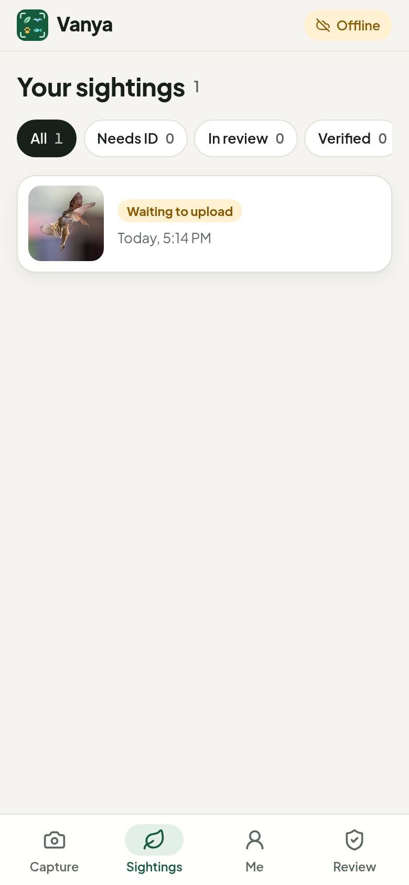
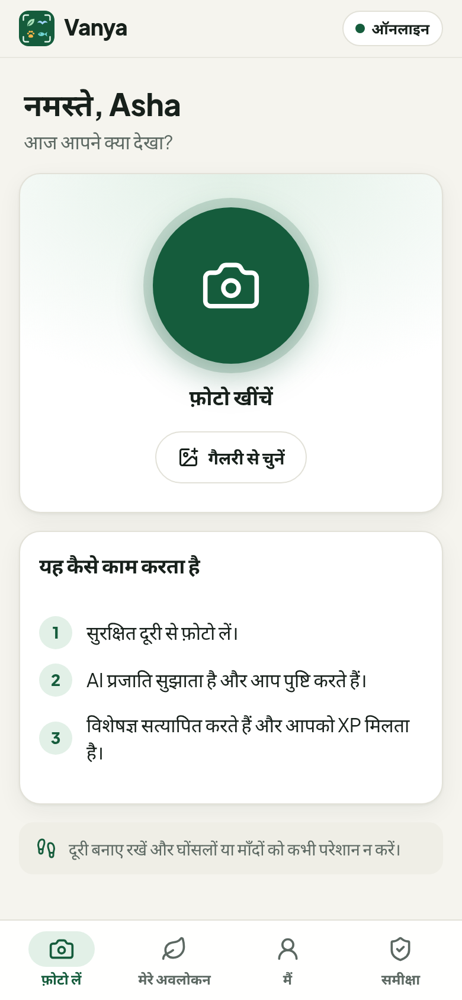
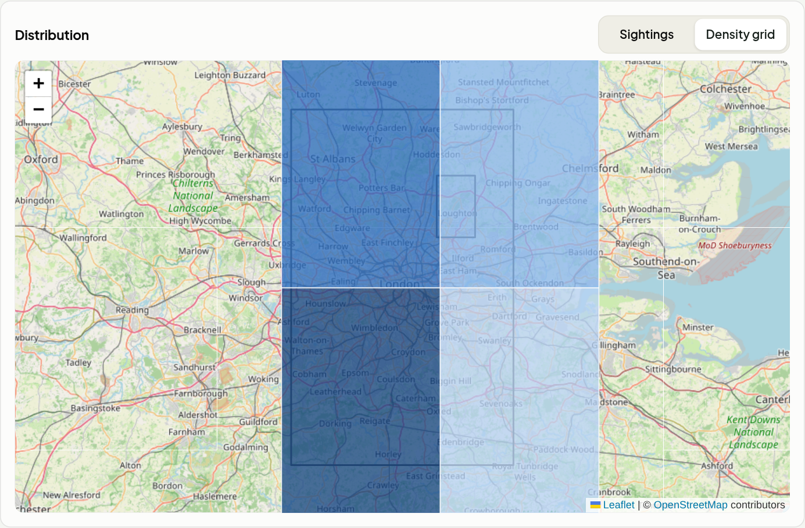

Vanya
Feature guide · Citizen-science biodiversity monitor
Vanya (वन्य) means “wild, of the forest”. Anyone can photograph wildlife, get an instant AI
identification and help protect it. Every verified sighting becomes trustworthy data for conservation teams.
SpotSnap birds, animals and plants, even offline.
IdentifyAI suggests the species; you confirm it.
VerifyAutomatic checks and experts make the record count.
ProtectDashboards, alerts and reports for organisations.
Version 0.1 · October 2026Screens shown use clearly labelled demo data
Contents
What's inside
- Part 1 · The Vanya app (for observers)
- 1Getting started: account, consent and safety
- 2Capturing a sighting
- 3AI identification: confirming the species
- 4Your sightings and verification
- 5Rewards: XP, rarity, levels, badges and leaderboards
- 6Protecting wildlife locations
- 7Works offline, in your language, day or night
- Part 2 · Expert review (for verifiers)
- 8The review queue
- Part 3 · Organisation dashboard (for NGOs, parks and researchers)
- 9Overview and filters
- 10Distribution map and density grid
- 11Trends and changes
- 12Rare, invasive and new species
- 13Alerts
- 14Ask the analyst
- 15Reports
- 16Managing your organisation
- Reference
- ARoles, statuses and rules at a glance
How Vanya works in one line
Observer takes a photo → AI suggests the species → observer confirms → automatic checks decide whether it is
verified straight away or sent to experts → verified records earn XP and flow into organisation dashboards,
alerts and reports.
Part 1
The Vanya app
A phone-first web app (installable from the browser, no app store needed) for anyone who wants to
photograph wildlife and help conservation.
Chapter 1
Getting started
Create an account, agree to share photo locations, and learn the safety rules.
Sign in or create an account
The welcome screen explains what Vanya does in three lines, then asks for an email and password.
New users tap “New here? Create an account” and add their name.
- Pick the language from the top-right menu: English, हिन्दी or Español. The choice is saved to the account.
- Passwords are stored with Argon2 hashing; sessions use signed tokens.
- Open the app on a phone and choose “Add to Home Screen” to install it like a native app.
Location consent and wildlife safety
Before the first photo, Vanya asks for consent to record where each photo was taken. Locations are what
make a sighting useful for science, so this step is required.
The same screen sets the ground rules for responsible wildlife watching:
- Keep your distance: zoom in instead of approaching.
- Never disturb nests, dens or roosts.
- Respect protected areas and private land.
Privacy promiseExact locations of threatened species are never shown publicly
(see Chapter 6).
Chapter 2
Capturing a sighting
The Capture tab is the home screen: one big button to photograph what you have found.
The Capture screen
- Greeting and prompt: “What did you spot today?”
- Needs-your-attention banner: if any sighting is waiting for you to confirm its species, an amber
banner says so. Tapping it opens just those sightings. The Sightings tab also shows a count badge.
- Take photo: opens the phone camera. Vanya records the time and GPS position at that moment.
- Choose from gallery: upload an earlier photo. Vanya reads the time and place saved inside the photo (EXIF),
or you can say “I took this photo here, just now”.
- Status pill (top right): Online, Offline or
2 to upload.
- New users also see a short “How it works” card.
Adding details
- Check the location. The pill shows the GPS accuracy (for example “Location ±12 m”). If there is no
GPS fix, the photo's own location is used when available.
- Pick a habitat with one tap: Forest, Grassland, Wetland, River or lake, Coast or sea, Desert or scrub,
Mountain, Farmland, Town or garden or Other. Leave it on Auto to let Vanya decide.
- Add notes (optional), such as behaviour or numbers seen.
- Hide my exact location publicly (optional): others will only see a general area of about 20 km.
- Save sighting. Vanya uploads the photo and asks the AI to identify it, usually within seconds.
Scope of version 1Birds, mammals, reptiles, amphibians and plants.
Insects, fish and fungi are recognised as “not covered yet” and will be added later.
Chapter 3
AI identification
Gemini looks at the photo and suggests the most likely species. The observer always makes the final pick.
“Is it one of these?”
After upload, the sighting opens with up to three suggestions, each with:
- the common and scientific name and its IUCN Red List status (for example “Least concern” or
“Endangered”);
- a match bar showing the AI's confidence (here 91% Common Myna);
- a short explanation of the features the AI used (“yellow bare skin around the eye…”).
Tap the right one to confirm it. If none fit, tap “Something else? Search species” and type a common
or scientific name.
When the AI can't help
- No animal, bird or plant visible → the app says so.
- Species outside version 1 scope → “Not covered yet”.
- AI unavailable → pick the species yourself with search.
Why the observer confirmsHuman confirmation plus AI confidence decide whether a record can be
verified automatically (next chapter). Disagreeing with the AI is allowed; it just sends the record to an expert.
Chapter 4
Your sightings and verification
Every sighting moves through clear statuses, so observers always know where it stands.
The Sightings tab
- Filter by All, Needs ID, In review or Verified; each filter shows a count.
- Sightings that need you are highlighted in amber with “Tap to confirm the species”.
- Each card shows the photo, species, status, rarity and the XP earned.
- Dates read naturally: “Today, 10:12 AM”, “Yesterday, 9:12 AM”.
| Status | Meaning |
|---|
| Confirm species | Waiting for you to pick the species. |
| Checking… | Automatic checks are running (seconds). |
| Awaiting expert | An expert must review it. Rare finds need two experts. |
| Verified | Accepted: it counts for science and confirmed XP. |
| Not accepted | Rejected, with the reason shown. |
Sighting details
Opening a sighting shows the species, its IUCN status, and what happened during verification:
- Verified automatically: a confident match (85% or more) for a species that is common in the area.
- Verified by experts: expert notes and corrections are shown to the observer.
- The XP card breaks the reward down (sighting, rarity bonus, new species for you, explorer bonus).
- The facts card shows when and where it was seen, and how precisely the location is shown publicly.
What sends a record to experts
Low AI confidence · observer disagrees with the AI · threatened or extinct species claimed ·
outside its known range or uncommon locally · duplicate or near-duplicate photos · photo GPS or time doesn't
match · screenshots, drawings, watermarks or captive animals.
Chapter 5
Rewards
XP rewards finding something new or rare, not just taking lots of photos.
The Me tab
- Level and XP with a progress bar to the next level, plus XP still pending verification.
- Stats: verified sightings, species, rare finds and reputation (how reliable your sightings have been).
- Badges (12): First sighting, 10/50/100 species, Birder, Wildlife watcher, Botanist, Rare find,
Conservation witness, Explorer, Regular and Trusted observer.
- Leaderboards for this week, this month or all time, globally or near you (100 km).
- Settings: language, show or hide me on leaderboards, link to the organisation dashboard (for
members) and sign out.
| Award | XP |
|---|
| Each verified sighting | 10 |
| New species for you | +20 |
| Explorer bonus (under-recorded area) | +15 |
| Rarity bonus (by local rarity) | up to +100, max 200 a day |
| Repeat of the same species within 1 km and 24 h | 2 |
| Restricted areas | 0 (record still counts) |
XP is provisional while a sighting is in review and becomes confirmed once verified.
Levels: Seedling, Sprout, Wanderer, Tracker, Naturalist, Field expert, Ranger, Guardian, Sentinel, Legend.
Rarity tiers
Rarity is calculated for a ~55 km area from GBIF records and Vanya's own verified data, combining how often the
species is recorded locally, how widespread it is, and its conservation status.
| Tier | Score | Typical example |
|---|
| Common here | below 0.2 | House sparrow in a city |
| Uncommon here | 0.2 – 0.4 | A species seen occasionally |
| Rare here | 0.4 – 0.6 | Few local records |
| Very rare here | 0.6 – 0.8 | House crow in London |
| Exceptional find | 0.8 and above | Endangered species such as the tiger |
Chapter 6
Protecting wildlife locations
Publishing the exact spot of a rare animal can help poachers. Vanya generalises locations automatically.
| Level | Who gets it | Shown publicly as |
|---|
| Open | Common species | About 100 m precision |
| Obscured | Threatened species, unknown or unchecked status, or when the observer chooses
“Hide my exact location” | A ~20 km grid cell |
| Hidden | Species an admin marks as highly sensitive (for example heavily poached) | Not shown publicly at all |
- The stricter of the observer's choice and the species' sensitivity always wins.
- Leaderboards, maps, dashboards and filters only ever use the generalised point.
- The exact location can be revealed only by verifiers (while the record is waiting for review), analysts
(verified records inside their organisation's regions) and platform admins, for a stated purpose (verification,
research, management, enforcement). Every reveal is logged, with a limit of 100 per person per day.
- The observer always sees their own exact location.
See the protected record in the review queue (Chapter 8) for how this looks to an expert.
Chapter 7
Offline, multilingual, day or night
Built for field work: poor signal, different languages and bright or dark conditions.

Offline: the sighting waits to upload

The app in Hindi
Works offline
With no signal, photos are saved on the phone with their time and GPS. The top bar shows
Offline and the sighting appears as “Waiting to upload”. As soon as the
phone is back online, Vanya uploads it and requests the AI identification automatically. Failed uploads can be
retried or deleted.
Three languages
English, Hindi and Spanish today, including species names and AI answers in the user's language.
More languages can be added without code changes to the screens.
Dark mode
Vanya follows the phone's light or dark setting automatically, which helps at dawn and dusk and saves battery
on OLED screens.
Part 2 · Chapter 8
Expert review
Verifiers get a Review tab: a queue of sightings that automatic checks could not accept on their own.
Reviewing a sighting
- Filters: by group (birds, animals, plants) and by area: within 100 km of your review area, or anywhere.
“Set area to my location” saves your area.
- The card shows the photo, the observer and their reputation, the time, habitat and notes.
- Observer's identification next to the AI suggestions with confidence bars.
- Why it needs review: the reasons, such as Low AI confidence.
Decisions
- Confirm the observer's species.
- It's a different species: search and confirm the correct one. The observer sees the correction.
- Reject with a reason: captive or cultivated, wrong place or time, duplicate or not their photo,
unidentifiable, no organism, wildlife disturbed, inappropriate.
- Skip to the next record. An optional note goes back to the observer.
Rare records need two independent experts. Observer reputation, shown on the card, rises with verified sightings (+1 automatic, +2 expert, +5 rare) and falls when sightings are rejected (−3, or −10 for fraud).
Protected species in the queue
For a threatened species such as the tiger, the reviewer first sees only an approximate area with a
Protected species label and a ★ Rare find badge.
If the exact spot is needed to judge the record, “Show exact location” asks for a purpose and reveals the
device GPS and the photo's own GPS side by side. The reveal is written to an audit log.
Photo noteThe photo on this demo record is hidden because the demo data reuses bird pictures.
Part 3
Organisation dashboard
A desktop dashboard at /dashboard for NGOs, park authorities and researchers. It shows only
verified records inside the organisation's regions of interest.
Chapter 9
Overview and filters
- Header: organisation name, unread alert count, language and a link back to the observer app.
- Filters (one row, shared by every panel so the numbers always agree): last 30 days, 90 days, 12 months or
all time; one region or all; birds, animals or plants. Clicking a species in “Most recorded species” filters
everything to that species.
- Headline numbers: verified sightings, species, observers, rare finds, threatened and invasive records.
Chapter 10
Distribution map and density grid
Sightings map
- OpenStreetMap base with the organisation's regions outlined.
- Points coloured by group: birds, animals,
plants. A ring marks protected species, shown at their generalised position.
- Click a point for the photo, species and date.
- Side panels list the most recorded species and the rare and threatened records.

Density grid: ~55 km cells shaded by number of sightings
Chapter 11
Trends and changes
- Sightings per month: a stacked chart by group. Hover a month for the exact numbers, or switch to a table view.
- Biggest changes vs the previous period: species recorded more or less often than in the equal period before.
The panel reminds readers that counts reflect observer effort too, so these are leads to investigate rather than population trends.
Chapter 12
Rare, invasive and new species
- Invasive species (your watchlist): every verified record of species your organisation marked as invasive.
Invasiveness depends on place, so each organisation keeps its own list.
- New to your regions: species recorded for the first time in your regions during the period.
- Rare and threatened (Chapter 10): records with a high rarity tier or a threatened IUCN status.
Chapter 13
Alerts
Vanya raises an alert as soon as a sighting is verified, typically within a minute, when it is:
- Invasive: a species on your invasive watchlist;
- Priority species: a species on your priority watchlist;
- New record: the first verified record of a species in your regions.
Alerts show the region and how quickly they were raised. Team members mark them as seen; the header shows the unread count.
Alerts can also be pushed to your own systems with a signed webhook (Chapter 16).
Chapter 14
Ask the analyst
Ask questions in plain language, for example:
- “Which species were recorded less often in the last 3 months than before?”
- “Top 5 birds in the last 90 days”
- “How many invasive species sightings this year, by month?”
The analyst (Gemini) restates how it understood the question, answers with key points and caveats, and
“Show the data” reveals the exact figures behind the answer. Recent questions are kept for the team.
Safe by designThe AI never writes database queries. It picks from a fixed set of
validated, parameterised queries, only sees aggregated numbers from your organisation's verified records, and is
instructed to answer only from that data.
Chapter 15
Reports
One click writes a weekly, monthly or quarterly report for your regions: a summary, sections on overall
activity, rare and threatened species, invasive species, new records and notable changes, and practical
recommendations.
- Reports are saved and listed in the Reports panel.
- Print or save as PDF produces a clean document for funders, boards or park managers.
- Reports can also be generated for every organisation on a schedule.
The model returns structured content that is displayed as plain text, so nothing from the AI can
inject formatting or code into the page.
Chapter 16
Managing your organisation
Organisation admins configure what the dashboard covers and who can see it. Analysts can view everything but not change settings.
Regions of interest
Draw a region by clicking corners on the map, or upload a GeoJSON file (for example a park boundary). The area is
shown in km². All panels, alerts and reports are limited to these regions.
Watchlist
Search any species and add it as Invasive or Priority. The
watchlist drives the invasive panel and alerts.
Members
Add colleagues by email as Admin or Analyst, or remove them.
Alert settings and webhooks
Choose which alert types to receive and add an optional HTTPS webhook. Each alert is POSTed as JSON and signed with
HMAC-SHA256 in the X-Vanya-Signature header. Admins can create a new signing secret and send a test alert.
Appendix A
Roles, statuses and rules at a glance
Roles
| Role | Can do |
|---|
| Observer | Capture sightings, confirm species, earn XP, appear on leaderboards. |
| Verifier | Everything an observer can, plus the Review tab and audited exact-location reveals for records in review. |
| Organisation analyst | View the organisation dashboard, alerts, analyst and reports; reveal exact locations inside the organisation's regions. |
| Organisation admin | Everything an analyst can, plus regions, watchlist, members and alert settings. |
| Platform admin | Manage roles, species protection levels and restricted areas; view the location-access log. |
Key rules
| Rule | Value |
|---|
| Automatic verification | AI confidence ≥ 85%, observer agrees, species common locally, no integrity flags |
| Expert reviews needed | 1 normally; 2 for rare finds |
| Obscured location | 0.2° grid cell (~20 km) |
| Exact-location reveals | Purpose required, logged, 100 per person per day |
| Daily rarity bonus cap | 200 XP |
| Repeat sighting window | Same species within 1 km and 24 hours |
| Rarity area | 0.5° cells (~55 km) |
| Leaderboard “near me” | 100 km radius |
Data sources and technology
Species identification and analysis: Google Gemini. Taxonomy, range and rarity baselines: GBIF.
Conservation status: IUCN Red List (via GBIF). Maps: OpenStreetMap and Leaflet. The platform runs on open-source
components locally and is designed to move to Google Cloud (Cloud Run, Cloud SQL, Cloud Storage, Pub/Sub,
BigQuery and Vertex AI) without changing features.